肤色与妆面
在 Vroid 中制作更好的面部贴图
先看默认皮肤上已有的淡渐变
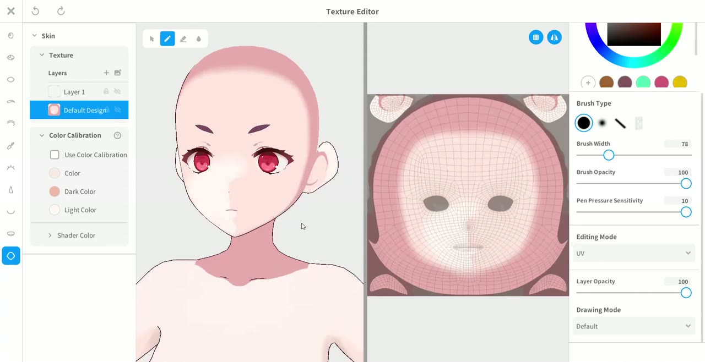
从脸部皮肤进贴图编辑器。默认层已经有一点边缘阴影，但脸心几乎是平的。笔刷是最左边的实心圆，Brush Width 78，Brush Opacity 100，Editing Mode 是 UV，Layer Opacity 100，Drawing Mode 是 Default。这些滑杆先别动。左边 Color Calibration 里的 Color、Dark Color、Light Color 只是校色样品，整段都没勾 Use Color Calibration，后面的三层颜色是自己用笔刷调的，不是点那三个圆。
口播建议先准备数位板，画面上没有打开任何数位板设置。
删掉 Default Design，只留 Layer 1
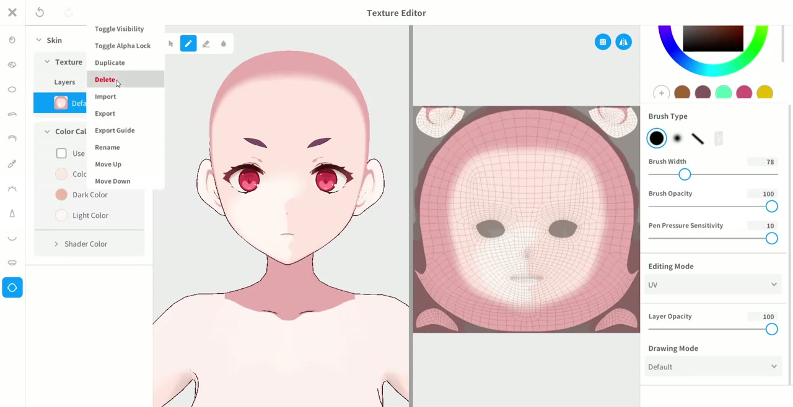
不要在默认层上改。右键 Default Design，点 Delete。删完这张默认皮肤会消失，脸上露出透明和口腔，图层列表里只剩空的 Layer 1。选中 Layer 1 再画。没有新建图层，也没有打开 Alpha Lock。
用大号硬笔刷铺一层很浅的底
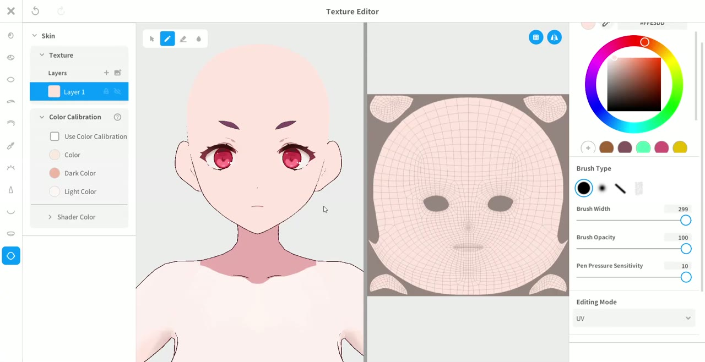
把色相环调到很浅的粉，色值栏是 #FFE5DD。笔宽从 78 推到 299，在右侧 UV 上把整张脸盖平。预览里脸心的淡渐变没了，变成一块浅粉；脖子暂时还比脸深，因为这一笔只铺这张脸的 UV。口播说习惯从比目标更深的肤色做起、再往上加受光；画面上是先铺这层浅底，暗部放在下一步。
沿脸的外圈压一圈暗部
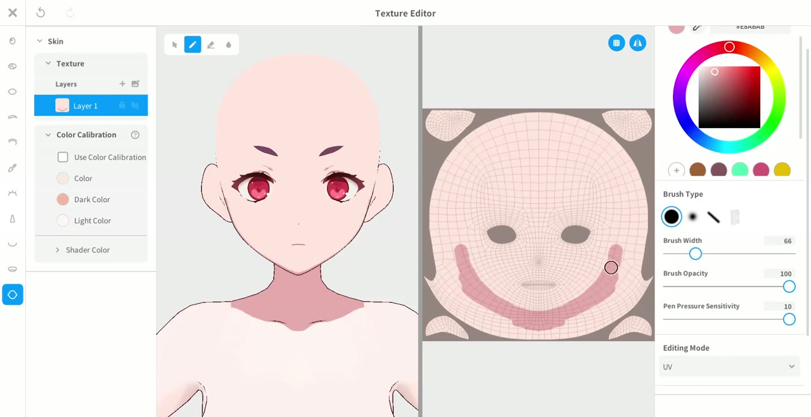
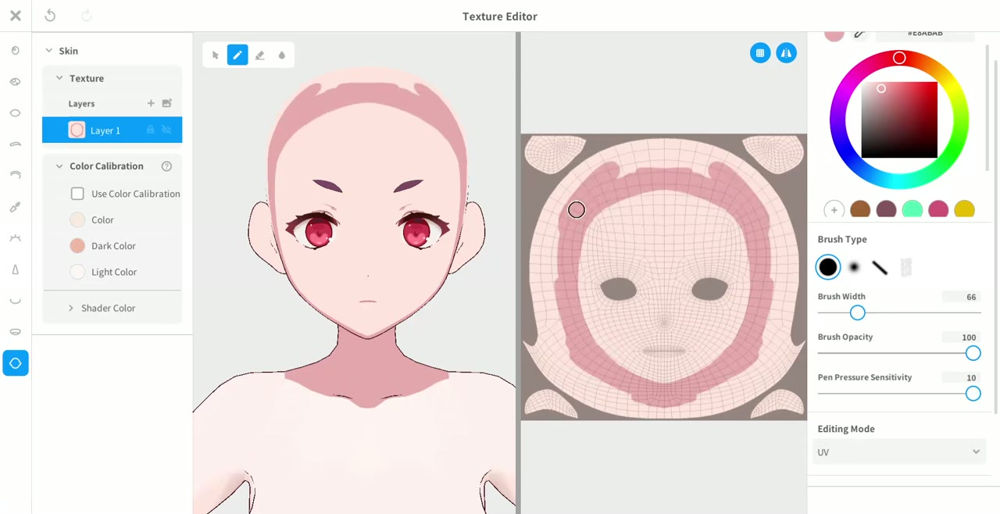
色值换成更深的粉红，这一段色值栏约为 #E8ADAD，笔刷仍是实心圆，宽度收到大约 66，不透明度还是 100。顺着 UV 上的线框，从下巴画起，再描脸颊外侧和发际，围成一圈。暗部只要从轮廓里微微露出来，做出一点厚度；口播说不要涂得太明显。画的时候看右侧 UV，左侧脸会跟着出现一圈粉边。
用模糊把暗部的硬边扫开
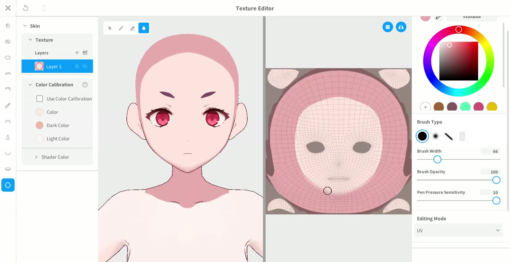
暗圈铺完后，点预览区工具栏第四个模糊，沿暗部内缘扫一圈，硬边会变成渐变。口播说只要快速过一遍。色值还停在暗粉上，但这一步是在抹，不是再铺深。
下巴太暗时用喷枪盖回浅色
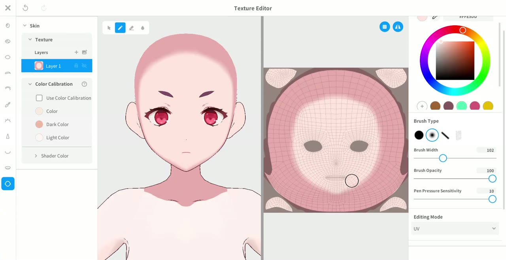
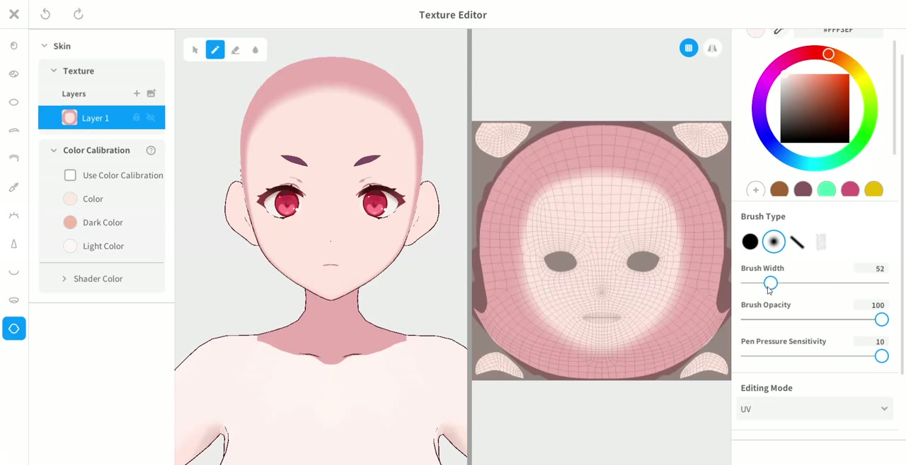
下巴若压得太死，就切回笔刷工具，选柔边喷枪，用铺底的浅色 #FFE5DD 在下巴轻轻盖回去。然后再点模糊扫边缘。口播里模糊一度觉得太宽，会收一收再扫，并反复说要软。这一段是直接在 VRoid 里画的；口播说平时也会拿到外部绘图软件，这次没有导出。
用很浅的颜色提额头、脸颊和鼻梁
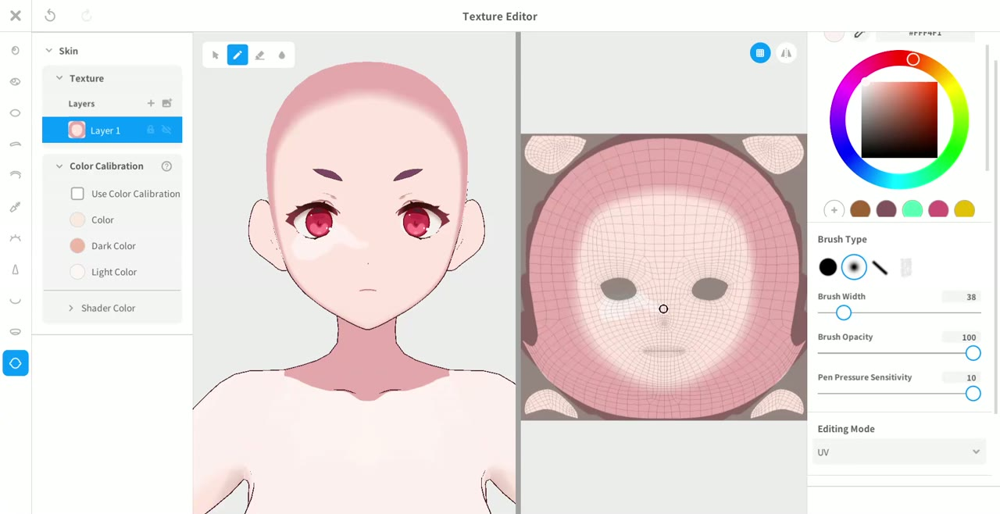
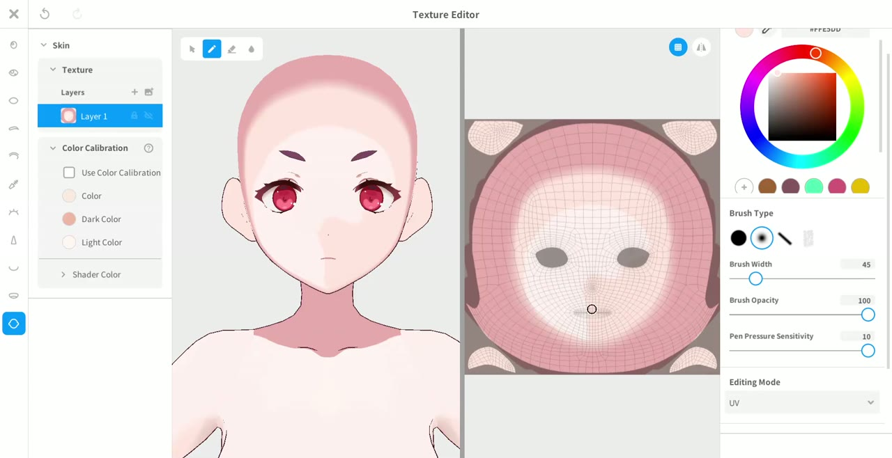
高光换到接近白色的浅粉。鼻梁那一笔色值栏大约是 #FFF4F1，喷枪收到 38，先点一侧眼下，再从鼻梁过。不要整脸铺白。口播说鼻子会把光切断，所以亮面在鼻梁上收住，而不是糊过整片脸颊。画到嘴附近时色值又回到 #FFE5DD，笔宽大约 45，用来收亮面的边。中间用取色器对过颜色，觉得过头就补暗或补亮。
口播把这套说成赛璐璐的三层：更暗的一档、中间的浅底、以及很亮的那一档。参考是动画截图和原神一类游戏，画面上没有打开参考图。作者名字口播听不清，这里不写。
高光边缘再模糊，脸就分成三层
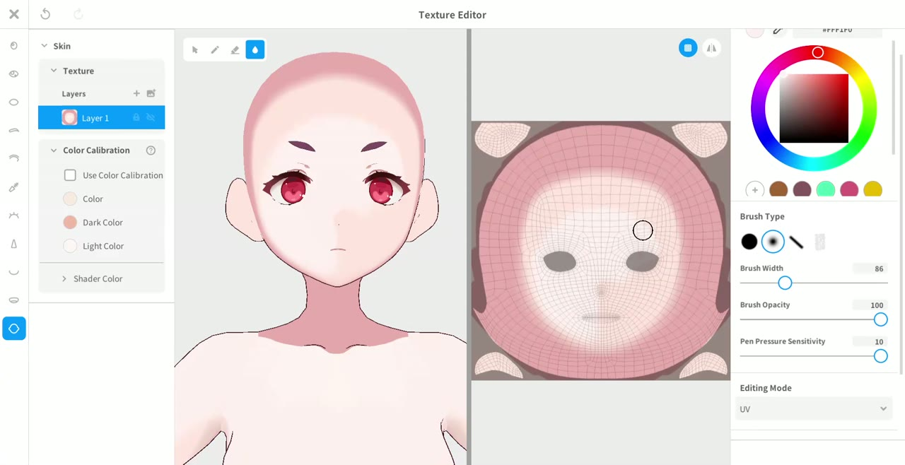
高光的边也可以模糊：先扫脸颊，再扫下巴，笔宽可以比鼻梁那一笔略大，这帧读数是 86。口播说下巴附近可以再大一点，额头也扫一下。扫完预览里是脸心和鼻梁更亮，发际、下颌和脖子留着暗粉，三层能分开，但边是软的。身体没有照这套去画；口播说全身用同一套会更干净，这条只做了脸。
关掉贴图编辑器时勾着 Skin
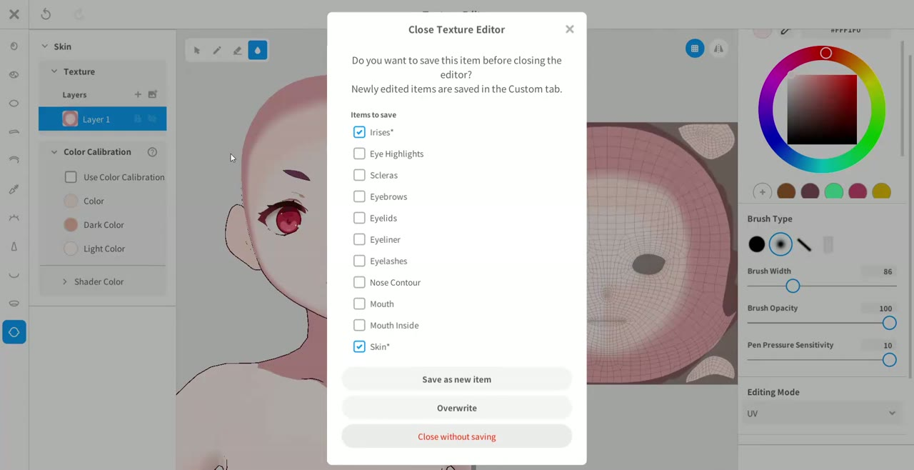
点编辑器关闭。框里写着新改的项目会进 Custom 页。画面上 Skin 是勾着的。这一帧看不清最后点的是哪一个按钮，不要猜；下一镜已经回到角色预览，皮肤缩略图上能看到刚画的浅脸和暗圈。
套上头发看暗部和亮面还在不在
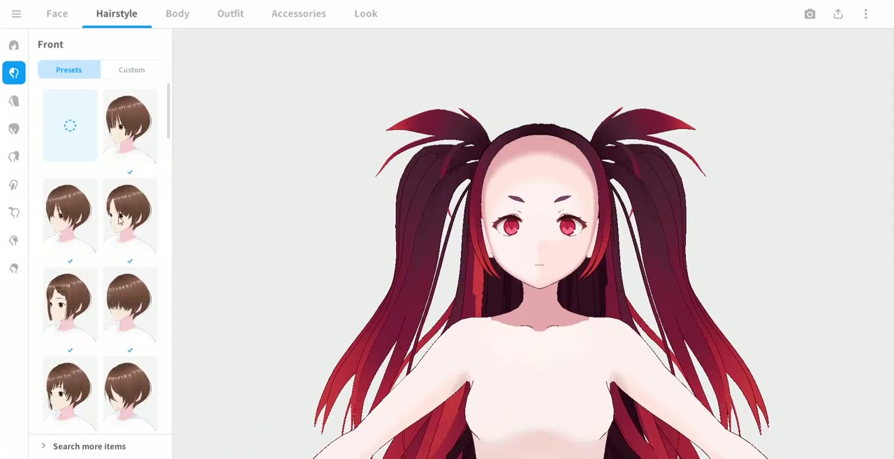
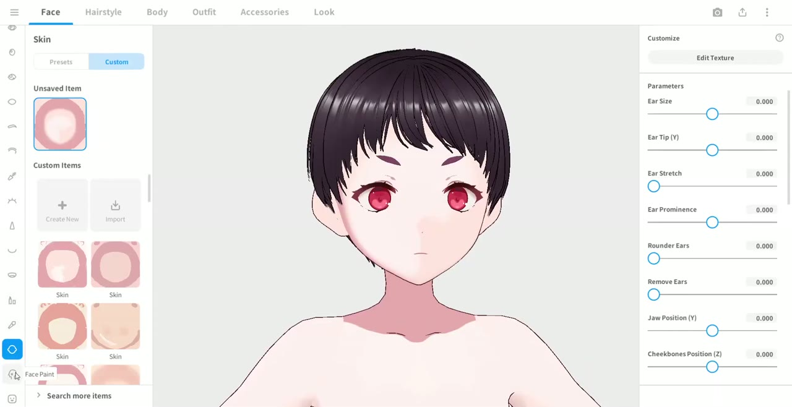
先套上已有的双马尾看层次。口播说不喜欢这组刘海，于是改到 Hairstyle Sets 里的短发。短发下发际的暗边、鼻梁的亮面和下巴的粉边都还看得见。Custom 页的皮肤缩略图和脸上是同一张贴图。右侧那些耳朵、下巴、颧骨参数这条没动。
闭眼检查贴图会不会被表情拉开
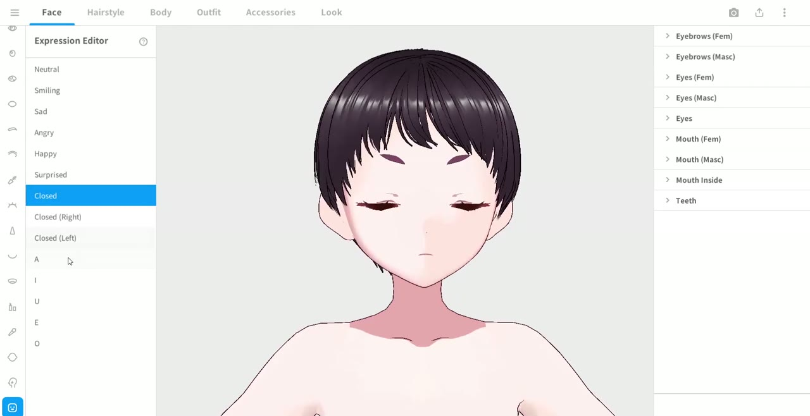
在表情列表里点 Closed。眼睛闭上以后，眼周和脸颊的浅色没有被拉成一条，下颌的暗边也还贴在脸上。口播担心手绘贴图会随表情拉伸，这一下是在看它没有被拉开。右侧那些五官分组没有点开。